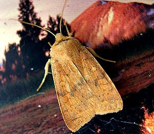

| ~ Noctuidae ~ | |
 |
9881-Goat Sallow Moth - - Cuculliinae/Xylenini/Homoglaea
hircini - See another version Here. |
 |
9886-Dimorphic Pinion Moth - - Cuculliinae/Xylenini/Lithophane patefacta |
 |
9887-Bethune's Pinion Moth - - Cuculliinae/Xylenini/Lithophane bethunei |
 |
9889-Wanton Pinion Moth - - Cuculliinae/Xylenini/Lithophane petulca |
 |
9904-Shivering Pinion Moth - - Cuculliinae/Xylenini/Lithophane querquero |
 |
9929-Mustard Sallow Moth - - Cuculliinae/Xylenini/Pyreferra hesperidago |
 |
9930-Citrine Sallow Moth - - Cuculliinae/Xylenini/Pyreferra citrombra |
 |
9936-Morrison's Sallow Moth - - Cuculliinae/Xylenini/Eupsilia morrisini |
|  | 9957-Bi-colored Sallow Moth - - Cuculliinae/Xylenini/Sunira bicolorago |
 |
9961-Dotted Sallow Moth - - Cuculliinae/Xylenini/Anathix ralla |
| Top | |
 |
10005-Jocose Sallow Moth - - Cuculliinae/Feraliini/Feralia jocosa |
 |
10008-Comstock's Sallow Moth - - Cuculliinae/Feraliini/Feralia comstocki |
 |
10014-Roland's Sallow Moth - - Cuculliinae/Psaphidini/Psaphida rolandi |
 |
10019-Figure-eight Sallow Moth - - Cuculliinae/Psaphidini/Psaphida resumens |
 |
10021-Grote's Sallow Moth - - Cuculliinae/Psaphidini/Copivaleria grotei |
 |
10177-Toadflax Brocade Moth - - Cuculliinae/Psaphidini/Calophasia lunula |
 |
10197-Gray-hooded Owlet Moth - - Cuculliinae/Cuculliini/Cucillia florea |
 |
10200-Asteroid Moth - - Cuculliinae/Cuculliini/Cucillia asteroides |
 |
10200-Asteroid Moth caterpillar - - Cuculliinae/Cuculliini/Cucillia asteroides |
 |
10202-Brown-bordered Owlet Moth - - Cuculliinae/Cuculliini/Cucullia convexipennis |
 |
10202-Brown-bordered Owlet caterpillar - - Cuculliinae/Cuculliini/Cucullia convexipennis |
| Moth Index ... Back ... Next ... Email ... Top |
{kind=link}